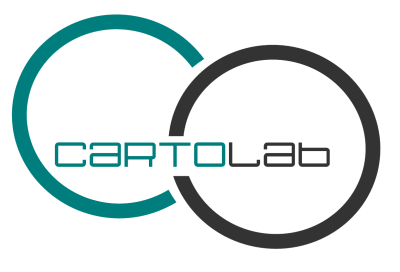

NavTable - extensión de gvSIG
{kind=link}
NavTable es una herramienta simple que busca conseguir una experiencia de uso más cómodo para los usuarios de SIG y resulta muy útil en el trabajo diario con datos geoespaciales.
La extensión NavTable ha sido creada por el laboratorio CartoLab de la "Universidade da Coruña" y se libera bajo una licencia GPL v3. Animamos a cualquier persona que nos haga llegar sugerencias, comentarios, informes de error, etc.
Características principales
- Visualización de datos de capas vectoriales en registros individualizados y en sentido vertical.
- Acceso a registros contiguos, primero, último o de forma aleatoria.
- Permite selección y deselección de elementos
- Edición de los valores alfanuméricos en tablas vectoriales y alfanuméricas.
- Copiado de los atributos de un registro a otro (desde el último o el seleccionado).
- Zoom: manual y automático a los elementos. También soporta zoom con escala fija
- Navegación usando filtros de selección.
- Filtros rápidos a través del menú contextual.
- Disponible en castellano, gallego, portugués, inglés y francés
Instrucciones de uso
Para utilizar NavTable se debe seleccionar una capa en el ToC (Leyenda) de gvSIG y pulsar el botón  . Esto abrirá la ventana de NavTable y ya se podrá interactuar usando sus botones y checkboxes.
. Esto abrirá la ventana de NavTable y ya se podrá interactuar usando sus botones y checkboxes.
Para más información consultar el manual de usuario [EN] - [ES] - [IT]. Existe una demo en la que se muestra el uso básico de NavTable disponible en video:
Descargas e instalación
NavTable es una extensión oficial de gvSIG, lo que significa que cualquier versión de gvSIG igual 1.10 o superior la incluye por defecto. No es necesario ninguna instalación.
De cualquier manera, en la tabla siguiente puedes encontrar todas las versiones del proyecto:
| Versión | Fecha | Instalador | Binarios | Código fuente | Versión de gvSIG |
|---|---|---|---|---|---|
| 1.0 | 2012-07-16 | gvspk | Instalación manual | ZIP - TAR.GZ | gvSIG 1.12 |
| 0.8 | 2011-03-28 | BIN - EXE | Instalación manual | ZIP - TAR.GZ | gvSIG 1.11 |
| 0.6.2 | 2010-08-12 | BIN - EXE | Instalación manual | ZIP - TAR.GZ | gvSIG 1.9 and gvSIG 1.10 |
| 0.6 | 2010-05-19 | BIN - EXE | Instalación manual | ZIP - TAR.GZ | gvSIG 1.9 |
| 0.4 | 2009-09-18 | BIN - EXE | Instalación manual | ZIP - TAR.GZ | gvSIG 1.1.2 |
| 0.2.2 | 2009-06-02 | BIN - EXE | - | ZIP - TAR.GZ | gvSIG 1.1.2 |
| 0.2 | 2009-05-11 | BIN - EXE | - | ZIP - TAR.GZ | gvSIG 1.1.2 |
Una vez instalado gvSIG en el sistema, se puede instalar la extensión NavTable de las siguientes formas:
- Instalación automatizada mediante asistente:
- Instalación manual:
- Ejemplo Linux:
/home/usuario/gvSIG_1.9/bin/gvSIG/extensiones/es.udc.cartolab.gvsig.navtable - Ejemplo Mac:
/Applications/gvSIG/sextante/gvSIG1.9build1045sex20090521.app/Contents/Resources/gvSIG/gvSIG\ 1.9\ build\ 1045.app/Contents/Resources/Java/gvSIG/extensiones/es.udc.cartolab.gvsig.navtable - Ejemplo Windows:
C:\Program Files\gvSIG_1_9\bin\gvSIG\extensiones\es.udc.cartolab.gvsig.navtable
Descargar el instalador correspondiente a su sistema operativo y ejecutarlo. Seguir las instrucciones.
Si quiere instalar NavTable manualmente puede descargar el fichero de binarios navTable_0.6.zip y descomprimir la carpeta 'es.udc.cartolab.gvsig.navtable' en la carpeta: [ruta_instalación_gvSIG]/bin/gvSIG/extensiones/
Cómo participar
NavTable se encuentra en proceso de desarrollo continuo, incorporando mejoras, corrigiendo fallos, etc. Por ello, todas las sugerencias, ideas, comentarios, críticas, notificación de errores serán bien recibidas.
- Correo electrónico: cartolab (at) udc (punto) es
- Lista de correo de usuarios: seguimos varias listas de gvSIG. Si tienes problemas con NavTable pregunta en alguna las disponibles.
- Lista de correo de desarrolladores: si deseas desarrollar con NavTable o corregir errores puedes preguntar en la lista navtable-devel.
- Reporte de errores: puedes usar nuestro sistema de reporte de errores.
- Traducciones: ponte en contacto con nosotros para ayudar con la traducción.
- Código fuente: disponible en github.
¡Ayúdanos a construir una herramienta más útil!
Créditos
Copyright (c) CartoLab - Universidade da Coruña, 2009, 2010, 2011, 2012. http://www.cartolab.es/Licencia GNU GPL v3. Puede encontrar los términos de esta licencia en http://www.gnu.org/licenses/
Director del CartoLab: Fco. Alberto Varela García.
Equipo de desarrollo (por orden de contribución al proyecto):
- Juan Ignacio Varela García
- Pablo Sanxiao Roca (iCarto)
- Javier Estévez Valiñas
- Francisco Puga Alonso
- Andrés Maneiro (iCarto)
- Jorge López
Han aportado ideas, comentarios, sugerencias y/o informado de errores:
- Francisco Alberto Varela García
- Daniel Díaz Grandío
- Gonzalo Martinez Crespo
- Adrián Eiris Torres
- Jorge Ocampo
- Carmen Molejón
- Vanessa Ros
Especial agradecimiento a:
- Francisco José Peñarrubia (Valencia)
- Joaquim Rocha
- Artur Juen
- Silvio Grosso
- Antonio Falciano
- Nacho Brodin
- Benjamin Ducke
- Agustín Diez Castillo
- Jordi Torres
- Giuliano Ramat
- José Antonio Canalejo
Traducciones:
- Castellano, Galego, English: CartoLab
- Francés: Gonzalo Martinez Crespo
- Portugués: Joaquim Rocha
- Alemán: Artur Juen
- Italiano: Silvio Grosso y Antonio Falciano
Todo el desarrollo y trabajos relacionados con NavTable se han realizado usando Software Libre.
 Última revisión: Julio 2012.